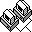
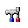

Windows application downloads.
:: Downloads
Home
Downloads
Oxygen
Words
AOMRecordedRenamer
PieDir
Gallery
Resume
About
Magnetic Pole Reversal
Games
Site Map
No Fail Games
Windows Applications
Title
Description
Release
Oxygen
A Reversi-type game, with a very challenging and customizable AI.
Oxygen Homepage
|
Download Now
Version 1.0
Released 4/7/1999
Words
Dictionary search with wildcards and a word unscrambler.
Words Homepage
|
Download Now
Version 2.0
Released 9/27/2001
AOMRecordedRenamer
Rename Age of Mythology : Titans RCX recorded game files.
AOMRecordedRenamer Homepage
|
Download Now
Version 1.3
Released 11/22/2004
PieDir
Show a pie graph for directory sizes.
PieDir Homepage
|
Download Now
Version 2.0
Released 6/14/2000
Older Software
MathSpline
A 3D Studio Max R3 plugin that is capable of drawing splines based on math equations.
MathSpline Homepage
|
Download Now
Version 1.0
Released 5/16/2000
VStars
A simple stars-like screen saver.
VStars Homepage
|
Download Now
Version 1.0
Released 1/13/1998

MOTD
A Message of the Day server and client.
MOTD Homepage
|
Download Now
Version 1.0
Released 3/24/2000
jAlive
A Java utility to checks to see if Internet sites are online.
jAlive Homepage
|
Download Now
Version 1.0
Released 3/22/2000
BootMove
A Windows NT move-file-on-boot utility.
BootMove Homepage
|
Download Now
Version 1.0
Released 7/18/1998
Partition Toys
Raw partition editing.
Partition Toys Homepage
|
Download Now
Version 1.0
Released 2/26/1997

D
The colored DOS directory listing guy.
D Homepage
|
Download Now
Version 6.0Beta
Released 6/9/1997
Copyright © 2020 by Pete Vasiliauskas.
All rights reserved.